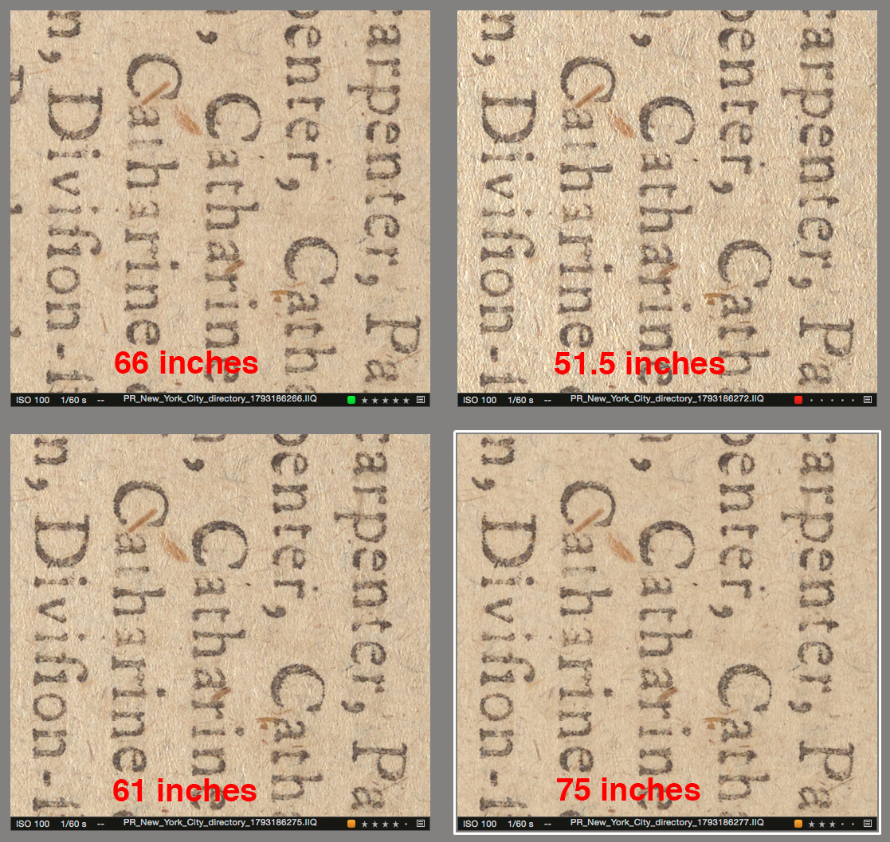
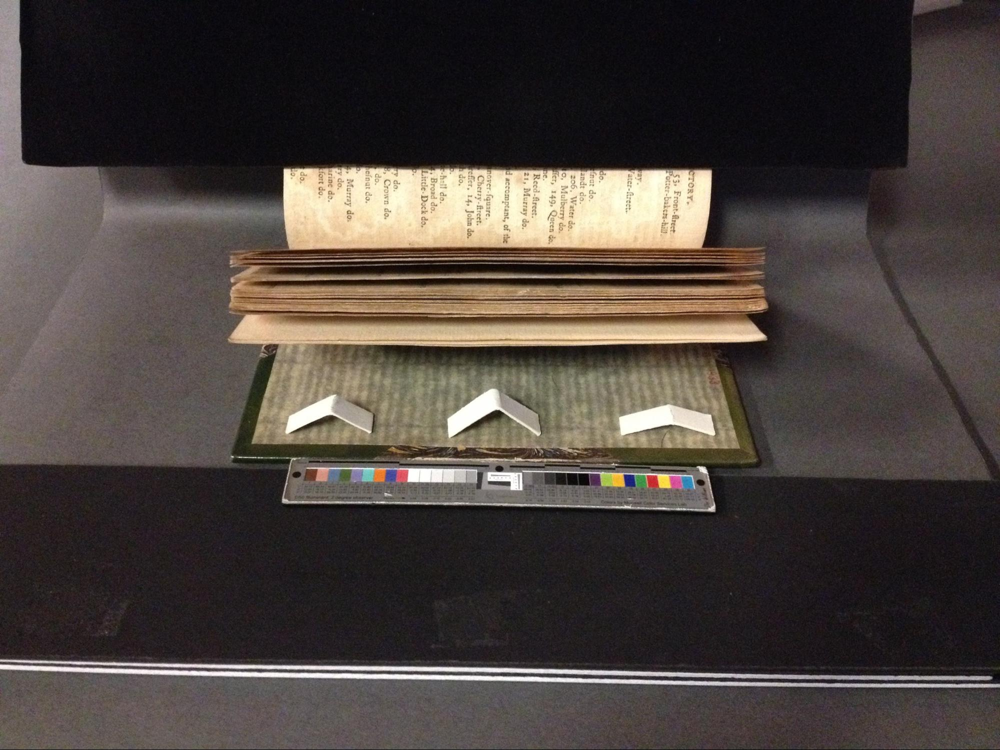
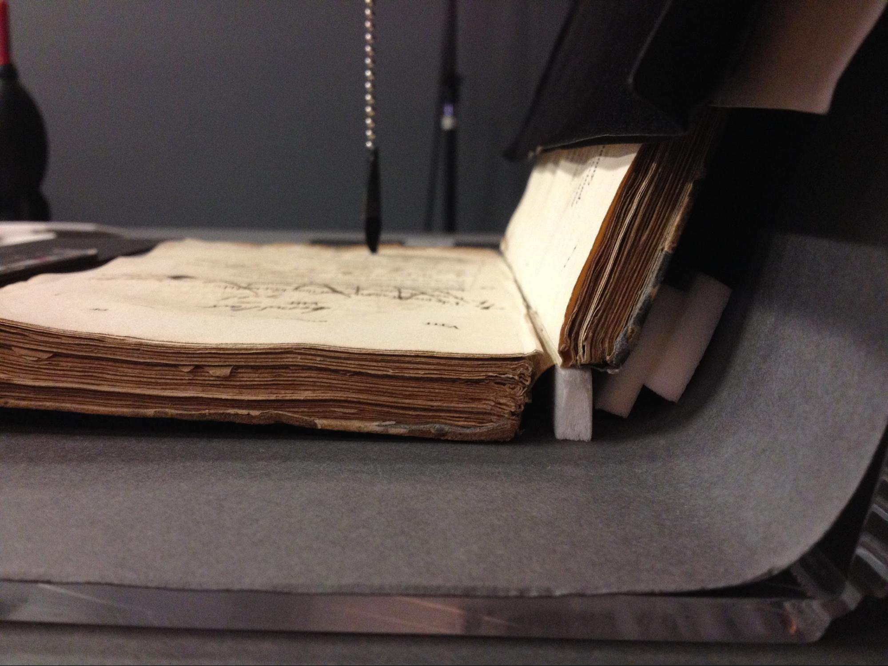

Assess the fragility of the paper and the stability of the binding.
Decide whether glass is needed to counter any page spring by placing the volume on a solid surface and paging through the text block. Flip to the opposite cover and repeat.
Check for gutter curvature, paper sheen, fold-outs, and any prints or photos that can help determine certain lighting and ppi set-ups.
In addition, decide whether a sacrifice of ppi is in order to boost depth of field.
An easier time achieving focus will add to throughput totals.
When applicable, find a balance between moire mitigation and desired ppi. You may need to take a number of test shots at varying heights.
Add to the mix the Moire tool coupled with the Local Adjustments tool.
Moire Amount will often be between 60-90 with Moire Pattern kept at its default value of 8 (though both values can stray from these norms if the effect is not detrimental to other aspects of the image).
In the end, you are looking for an efficient, methodical and productive approach per capture session.
Check that the camera is level to the shooting surface.
Use a level on the text block and make adjustments along both axes as necessary.
Match target to book height.
Your typical aperture will rest between f8.5 to f11 (by way of example, we’ve chosen f11 for City Directories to give more flexibility with focus depth and productivity).
Determine the height and angle of the lights in order to achieve the desired balance between texture and fill.

Make a capture and check your 5-points of focus, knowing that your aim is to move into the focus and the text block with each subsequent capture.
Focus will continue down into the visible block of successive fore edges.
Focus will continue down into the gutter and will fall off as it moves higher up the facing page.
Correct for highlight kick back if necessary.
Diverge from standard light angle of 70 degrees.
Adjust the flocked paper covering the facing page as needed.
Increase the angle of facing page by using a strip of foam to push the spine forward.
Try raising the lights slightly.
Slide the lights backwards and forwards an inch or two on each side.
Maintain ppi throughout session (i.e. 765 ppi from cover to cover).
ppi consistency +/- 5 points.
ppi based on target (at initial setup and subsequent adjusted heights).
Secure the cradle with a clamp, tape or weights as needed and if desired.
Use Trello notes to keep tabs on your set-up specifics, for example:
P65+
Pack power (7.5)
f11
Light height ^ 66" (to pin)
< lights > 46" (to edge of table)
starting/ending column height >26.2cm
765 ppi
LCC creation
Only one LCC should be needed per book/session, as long as lighting and aperture remain unchanged.
White point/neutral balance should remain consistent.
If not, try to match with previous captures or create a new white balance for all captures.
White point aim of 239/240, or 237 if highlights need to be kept in check.
There is always the Highlight tool as an added means, or a lowered white point that is noted in Trello.
Use Trello notes to make QC person aware of any pagination anomalies, unavoidable text loss in gutter, white point discrepancies, focus fall-off, moire characteristics, etc.
Using glass safely:
When off the book, use foam to raise glass above the table surface to reduce any risk of scratching, to keep surfaces clean, and for ease in handling.
Know how you’ll move the glass into the set to protect both it and the item being photographed.
A safe and repeated routine works best.
When needed, use secondary card and/or foam supports to reduce/remove pressure from fragile pages.
Using glass effectively:
Use the sheet of glass to apply perpendicular pressure to a facing page, thus opening up the gutter area and exposing more text.
By using a secondary card support to kick up the glass beyond the target, greater downward pressure can be applied to an especially springy gutter area.
Using a larger piece of glass than book size dictates can, likewise, level out a stubborn page.
Take advantage of a book’s natural spring by using secondary card/foam supports to allow pages to rise and meet the glass, thus allowing focus to remain consistent through a great number of captures.

Black card or not?
General rule of thumb, yes.
Test can be made using black velvet under glass to see if reflection is an issue.
If vast majority of a book lies flat and only 10% or less of the pages do not, you can see if using the compressor will be a better option than using glass.
Fragility of paper will help determine if this is a viable option.
Shoot cover-to-cover, with the spine captured last.
Shoot rectos first (tagging all one color).
Flip book to shoot versos in reverse order, so that the method of moving into the focus and the text block can be continued (tagging a different color).
Shoot covers and then spine (after sequencing recto/versos and confirming no pages were missed).
Place book on cradle and ascertain how it spreads as it opens. Place the color target on cradle with an adequate buffer between itself and the book.
Try to mitigate the shadows that the color target might cast upon the volume.
Tape the color target to a matboard support.
Light pencil marks on the background paper or a taped-in-place matboard can aid in color target orientation.
Make sure the text block is as plumb as possible, adding foam and cardstock additions as needed
It’s easy to use too much foam.
Keep things simple whenever possible.
Foam can be used to provide structural support as well.

If using ppi guides, set up at this time.
Chain.
Card with foam.
Ruler.
Target height is built-up using a set of black/white 4-ply boards, one 2-ply board, and one 1-ply board.
Use Capture One guides to assess book placement.
This will streamline the cropping process.
For Capture One set-up, you can use the “Viewer” setup on 2nd monitor - at 100% for quick pagination reference.
Check focus approximately every 10+ captures (or more) and adjust camera and target height as needed.
Stopping to check focus is a good time to double-check page order and to scan for any extra/missed captures.
Books without pagination will require extra attention to detail.
It’s also a good time to check the level of the item and the placement of any foam/matboard.
Instead of a focus-be-all approach, we are looking for a zone of acceptable focus.
Additionally, when a certain balance of focus has been lost, and it’s time to adjust the camera height, keep the last capture and continue on.
Keep in mind that as we move through a book the curvature of the gutter may preclude an overall level of sharpness.
Focus on the meat of the text and/or image area.
If focus fall-off affects the text or image, try tapping the camera down ever so slightly to mitigate and balance appropriately.
Use focus aids as needed.
Getting the most out of the text or an image as it moves into the gutter:
Add foam behind the spine as needed in order to help kick the page out (beware of adding too much pressure to the spine).
Move the gutter toward the back edge of the capture frame.
Use polyethylene tape to lightly tug on the facing page.
Assistance from a colleague might be in order.
If using glass, lightly press its fore edge into the facing page.
There will be times when the text can never be captured in its entirety.
So be it.
Sometimes this lost text will appear in the capture of the facing page.
Keep this in mind when cropping the facing page.
Lastly, a deep curve into the gutter can lead to parts rendered with less than optimal focus.
Concentrate your focus on the meat of the page and worry less about blank sections appearing soft.
For less-than-optimally focused text and/or images, focus on legibility rather than a page-wide balanced sharpness.
Set an objective for your capture rate per hour/day.
Think of a total you’d like to achieve during a focused period of time.
Realize that we are setting up the book for production, not pure perfection.
Goal is book dependant. For the City Directories series we are seeing numbers of approx 30-50/hour - with a high of 60.
Overall goal is creating a productive and efficient workflow.
Fold-outs can be marked in a variety of ways so that it’s clear where a fold-out needs to be inserted after initial captures are made.
When setting back up from scratch (when sharing workstation):
For a quick start up, consult your Trello notes.
Being able to refer to a “last camera height” measurement, as noted in Trello, will simplify matters.
Use compare variant to assist in matching focus with earlier captures.
One could also use a ppi tool such as a chain or a combo of mat board with a foam lead.
Spine capture methods:
Shoot spine last.
Measure height increase to quickly move camera up to same ppi position, use a guide.
Safe support approaches:
Use foam and gray covered boards to sandwich and support the book.
Use polyethylene strap around the fore edge of the cover boards.
Use the cover boards themselves as support when able to do so safely.
Use glass for the spine when it has been used for the rest of the session.
Usually the glass can be balanced between the spine and the raised color target.
Note: Avoid sequence headaches by making sure date & time on the digital back are correct.
Confirm that total capture counts are the same for recto/versos, and check pagination individually.
Beware of duplicated or missing endsheets, very easy to do.
Adjust white points +/- as necessary using EXPOSURE tool.
Apply moiré filtration as needed.
Be aware of color smearing issues.
Different color tags per recto and verso captures should already be applied, post capture, for ease of sequencing.
Place covers, any foldouts, and spine into proper sequence.
Place spine in last position for best viewing experience within the Digital Collections book viewer.
Rename rectos and then the versos using the BATCH RENAMING tool and setting the Set Rename Increment Counter to 2.
Before renaming versos, be sure to select all and Reverse their order, so that they correctly match the sequence of the book.
Double-check that the book is in proper sequence and that pagination matches the original material.
Make sure to note anomalies in Trello for the QCer.
Create total number of captures on MMS work order.
Crop captures for S Files.
Use a select recto/verso set of pages from the beginning, middle and end to determine a crop height that will be applied to the entire session.
Use AUTO-CROP tool if available.
After adjusting a capture’s crop width, positioning and rotation, try applying these changes in batch form to a fair number of subsequent captures. Then adjust the crop on another capture and repeat this process.
Process S Files.
Process U files.